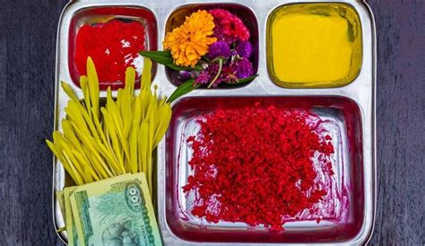

Dashami, also known as Vijayadashami, is a major Hindu religious festival celebrated in Nepal and other parts of the world. The word Dashami means “tenth” in Sanskrit, and it is the tenth day of the lunar fortnight of the Hindu calendar.
The day is celebrated to mark the victory of good over evil. It is believed that on this day, Goddess Durga defeated the demon Mahishasura after a fierce battle that lasted for nine days and nights. During this time, people clean their homes, wear new clothes, and decorate their houses with flowers and lights. They also visit temples to offer prayers to Goddess Durga and other deities. On the tenth day of Dashami, people exchange greetings and blessings with each other. Especially in Nepal, we put red tika and jamara on our foreheads.